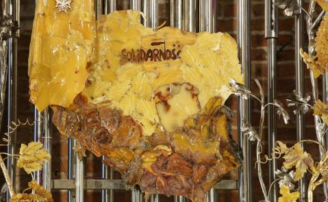

Przelew i BLIK
37 1240 2920 1111 0010 2775 1531721 171 133- Odbiorca
- Parafia Rzymskokatolicka pw. św. Brygidy, ul. Profesorska 17, 80-856 Gdańsk
- Tytuł
- na cele kultu religijnego; dopisz cel, np. „Bursztynowy Ołtarz”
Z zagranicy · From abroad
PL39 1240 5400 1787 0010 3550 0378PL72 1240 2920 1978 0010 1936 3999Do uzupełnienia: kod SWIFT/BIC dla przelewów zagranicznych.
Bursztynowy Ołtarz Ojczyzny III etap

Trwa ostatni etap prac. W nastawie jest już 10 złoconych winorośli z listkami z bursztynu i srebra, na których wygrawerowano imiona i nazwiska darczyńców z rodzinami.
Możesz zostać darczyńcą listka, gałązki, kiści winogron, pszenicznego kłosa albo kwiatów w pszenicznych łanach. Do wyboru są projekty różnej wielkości i ceny.
- Wybierz elementO dostępne projekty i ceny zapytaj w biurze parafialnym albo w zakrystii.
- Złóż ofiaręPrzelewem z dopiskiem „Bursztynowy Ołtarz” albo na miejscu.
- Podaj napisImiona i nazwiska osoby, małżeństwa lub rodziny zostaną wygrawerowane na srebrno-złotym listku.
Parafia dziękuje także za dary w złocie, srebrze i bursztynie. Historia ołtarza
Konserwacja zabytku
Mury dawnego klasztoru etap II
konserwacja muru zachodniego
Kontynuacja prac z 2020 roku, wykonanych dzięki dotacji Ministerstwa Kultury i Dziedzictwa Narodowego. Cel: zatrzymać niszczenie cegieł i zapraw przez wodę opadową — oczyszczenie, wzmocnienie i uzupełnienie cegieł, redukcja zasolenia, hydrofobizacja.
Kaplica św. Eryka zrealizowano
rekonstrukcja renesansowego wnętrza, dziś zakrystia
Kaplica z XV wieku, ufundowana z inicjatywy duchownych z Uppsali, gdy gdański klasztor był filią Vadsteny. Rekonstrukcję sfinansowała Fundacja ORLEN.
Inne formy pomocy
- Zamów intencję mszalnąwolne terminy na grudzień; Msze gregoriańskie i suplikacyjne
- Cegiełka przy zwiedzaniu6 zł, emeryci i studenci 5 zł, dzieci 3 zł — na Bursztynowy Ołtarz
- Zaangażuj się we wspólnotęministranci, Żywy Różaniec, Apostolat Maryjny
Do decyzji: obecna strona podaje też prywatne konto ks. proboszcza — pominąłem je; warto ustalić, czy ma się tu znaleźć.